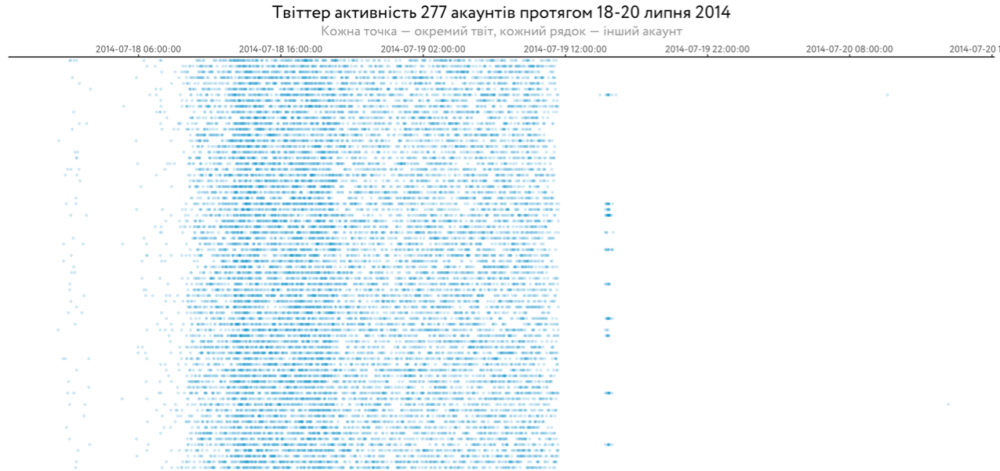
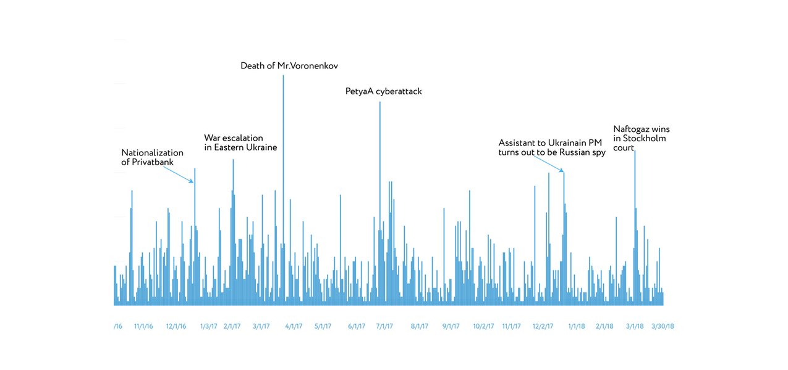
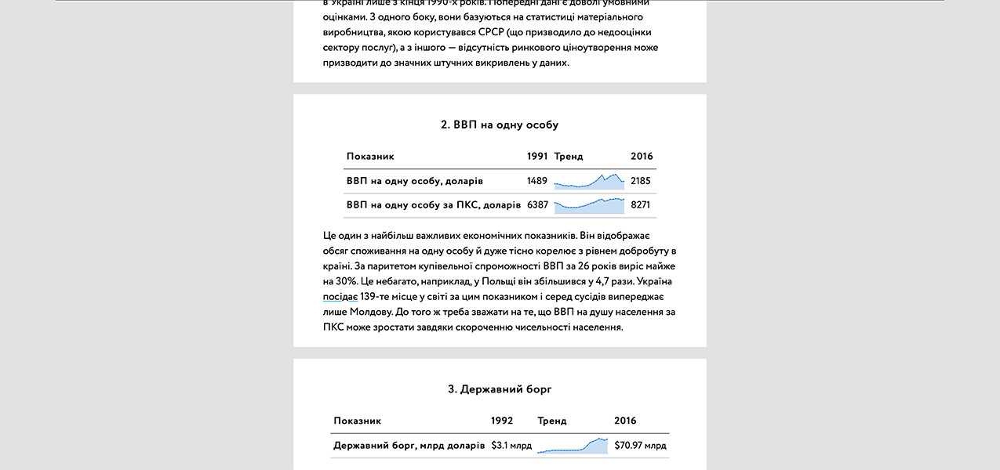

How Russian “Troll factory” tried to effect on Ukraine’s agenda (90+ citations in media)

Ukraine in Western headlines (was presented in UN in New York)

26 economic indicators about 26 years of independent Ukraine (the most popular publication on voxukraine.org)
Online tool to check MP's effectiveness
(50K+ views)